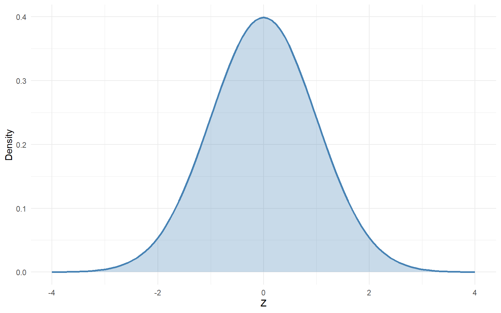
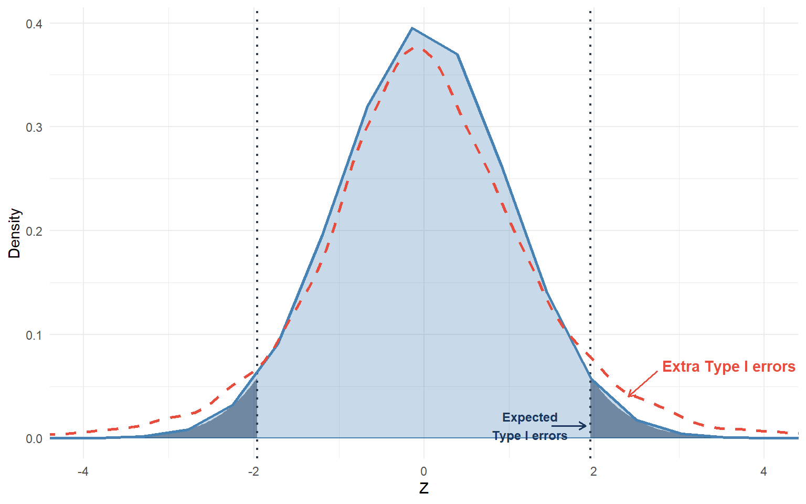
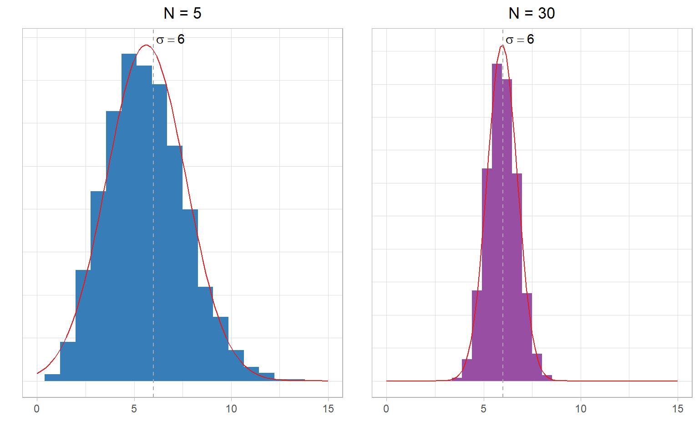
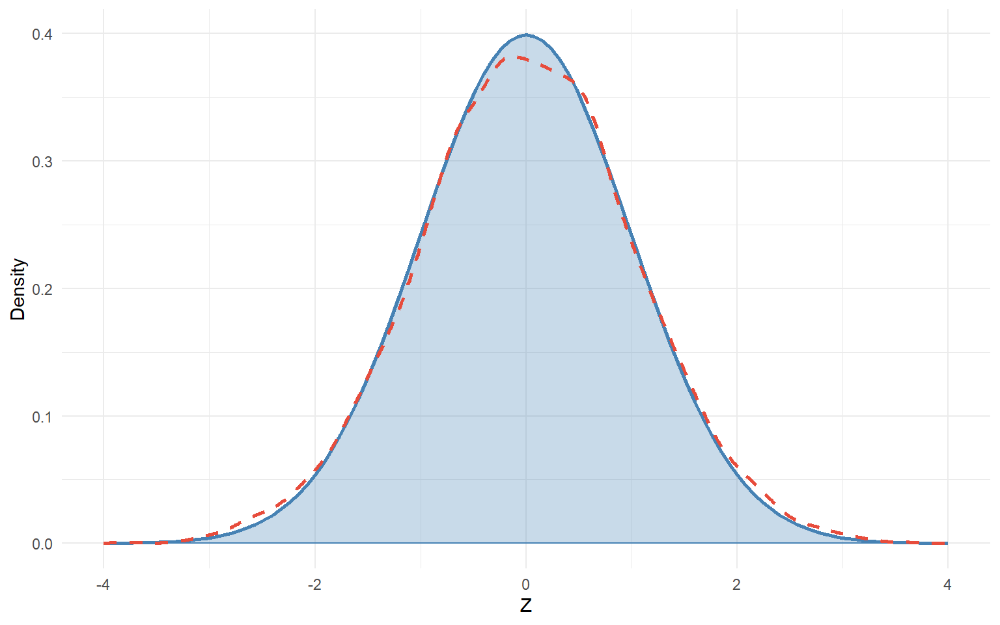
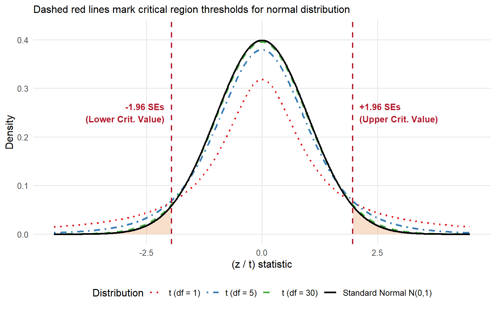
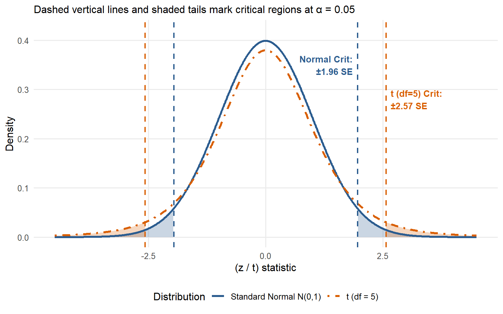

## Define number of samples
Samples <- 10000
## set sample size
n <- 5
## set mu and sigma
mu <- 12
sigma <- 6
## Initialize empty vector
z_statistic <- numeric(Samples)
set.seed(1234)
## Initialize Loop
for(i in 1:Samples){
## Draw random sample
sample <- rnorm(n, mean = mu, sd = sigma)
## calculate sample mean
x_bar <- mean(sample)
## calculate sample SD
s <- sd(sample)
## calculate standard error
SE <- s/sqrt(n)
## Save z-statistic
z_statistic[i] <- (x_bar - mu)/SE
}Lecture 8: The Case of the Missing Poulation Variance
Previously….
Let’s imagine:
- I sample a group of 44 NBA basketball players
- On average, they score 14.5 points per game
- I want to test the hypothesis that on average, the population I sampled from scores 12 points per game
- In the population, the standard deviation of basketball player points per game is 6
- 14.5 is not 12! But how do I know how likely or unlikely this statistic would be in my sampling distribution?
Sampling Distributions of Means
In general….
- The sampling distribution of means across samples will follow a normal distribution
- The mean of this distribution will be \(\mu\), the population mean from which we are sampling
- The standard deviation of this distribution will be the \(\text{standard error (SE) =}\frac{\sigma}{\sqrt{N}}\)
- But what if we don’t know \(\sigma\)?
- The sample standard deviation \(s\) is our best estimate of \(\sigma\), so let’s try that!
- What would happen if we use \(\text{standard error (SE) =}\frac{s}{\sqrt{N}}\)?
Simulating Samples
Let’s imagine that I repeatedly sample basketball players from a population with \(\mu = 12, \sigma = 6\)
- Let’s start by simulating 10000 repeated samples of \(N = 5\)
- In each sample, I will calculate my \(Z\)-statistic as \(Z = \frac{\bar{x} - \mu}{\text{SE}}\)
- In theory, the distribution of \(Z\)-statistics should follow a standard normal (\(\mu = 0, \sigma = 1\)) distribution.
- But how would this distribution actually look if I calculate \(\text{SE} = \frac{s}{\sqrt{N}}\) instead of \(\text{SE} = \frac{\sigma}{\sqrt{N}}\)
Simulation Code
Our Target Distribution

Overlaid \(Z\)’s
What Went Wrong?
- The distribution we got had “fatter tails” than the one we expected
What’s the practical implication of this result?
A larger proprtion of sample means would get “counted” as extreme values than we expect, meaning we would incorrectly reject the null hypothesis more than 5% of the time (assuming it were true)
We are more likely to make a Type I error than we want
Type 1 Error: Rejecting a true null hypothesis. \(\alpha = .05\) means we are comfortable incorrectly rejecting a true null hypothesis 5% of the time.
Type I Errors

Why Did This Happen?
- \(Z\)-tests are designed to account for one source of randomness: variation in sample means (\(\bar{x}\)’s)
- But our calculation had a second source of randomness: using \(s\) to calculate our standard error rather than \(\sigma\)
- Like the mean, the amount of randomness in our sampling distribution of \(s\)’s will also follow the CLT, but:
- The distribution of \(s\) is skewed
- In larger \(N \rightarrow\) will look more normal, vary less from \(\sigma\)
- In smaller \(N \rightarrow\) will look less normal, vary more from \(\sigma\)
Sampling Distribution of \(s\)

What About Larger Samples?
Simulation Code
Let’s redo our simulation for \(N = 44\)
## Define number of samples
Samples <- 10000
## set sample size
n <- 44
## set mu and sigma
mu <- 12
sigma <- 6
## Initialize empty vector
z_statistic44 <- numeric(Samples)
set.seed(124)
## Initialize Loop
for(i in 1:Samples){
## Draw random sample
sample <- rnorm(n, mean = mu, sd = sigma)
## calculate sample mean
x_bar <- mean(sample)
## calculate sample SD
s <- sd(sample)
## calculate standard error
SE <- s/sqrt(n)
## Save z-statistic
z_statistic44[i] <- (x_bar - mu)/SE
}Result

William Gosset

William Gosset (1867-1937)
- Solution to this problem was discovered by William Gosset
- Worked at Guinness Brewing Company
- Did small-sample experiments in which he changed the ingredients in the Guinness beer recipe
The \(t\)-distribution

William Gosset (1867-1937)
- Gosset corresponded with contemporary statistical titans in academia, including Ronald Fisher
- Published papers in Biometrika under pseudonym “Student” to avoid angering his employers
- Most famous for discovering the \(t\) distribution, which allows us to account for the added uncertainty due to sampling variation in \(s\)
What does the \(t\)-distribution do?
- Adds an extra parameter: degrees of freedom \(df\)
- Same idea as \(df\) in calculating the sample variance
- Number of datapoints that can freely vary after accounting for estimated values
- Larger \(df \rightarrow\) thinner tails, more similar to normal distribution
- \(t\)-distribution with \(df = \infty\) is equivalent to normal distribution
- Smaller \(df \rightarrow\) fatter tails, less similar to normal distribution
- We need to move more standard errors away from the mean to include 95% of the distribution in the center (thus 5% in the tails)
- Need our sample mean to be further from hypothesized mean to reject null hypothesis
Comparing \(df\)

Comparing Critical Values

Calculating our \(t\)-statistic
The \(t\)-statistic is calculated almost exactly the same way as a \(z\)-statistic, just using \(s\) instead of \(\sigma\) in the standard error formula.
Revisiting our NBA example, let’s now assume
- I sample a group of 44 NBA basketball players
- On average, they score 14.5 points per game
- I want to test the hypothesis that on average, the population I sampled from scores 12 points per game
- In the my sample, the standard deviation of basketball player points per game is 6
- 14.5 is not 12! But how do I know how likely or unlikely this statistic would be in my sampling distribution?
SE and \(t\)
\[\text{standard error (SE)} = \frac{s}{\sqrt{N}} = \frac{6}{\sqrt{44}} = 0.90\]
\[t_{df} = \frac{\bar{x} = \mu}{SE} = \frac{14.5-12}{0.90} = 2.78\]
Notice: This is numerically identical to what we did when it was a \(z\)-test!
- This time \(s = 6\) rather than \(\sigma = 6\)
Where our procedure differs is our reference sampling distribution. Instead of a standard normal distribution, we will us a \(t\) distribution with \(df = N = 1\)
- In our case \(N - 1 = 44 - 1 = 43\)
\(p\)-value
pt(2.78, df = 43, lower.tail = FALSE)[1] 0.004016125If we repeatedly sampled 44 NBA players with mean points per game \(\mu = 12\) and an unknown SD that we estimate to be \(\s = 6\), only 0.40% of those samples would have a sample mean \(\bar{x} = 14.5\) or larger.
- This is larger than the \(p\)-value from our \(z\)-test example (.0024), but not much!
Two-tailed test
This result assumes a one-tailed test
- What is the probability that if \(\mu = 12\) we would get a result at least as large as 14.5
A two-tailed test would consider the possibility we get a result of equal magnitude in the other direction
- If our a priori alternative hypothesis wasn’t that our sample was likely to be better than \(\mu = 12\) we also need to consider the probability that a random sample might have had \(\bar{x} = 9.5\)
- This result would be equally (un)likely under the null hypothesis
- Conceptually, we just multiply \(p\)-value by 2
- \(.004 \times 2 = .008\)